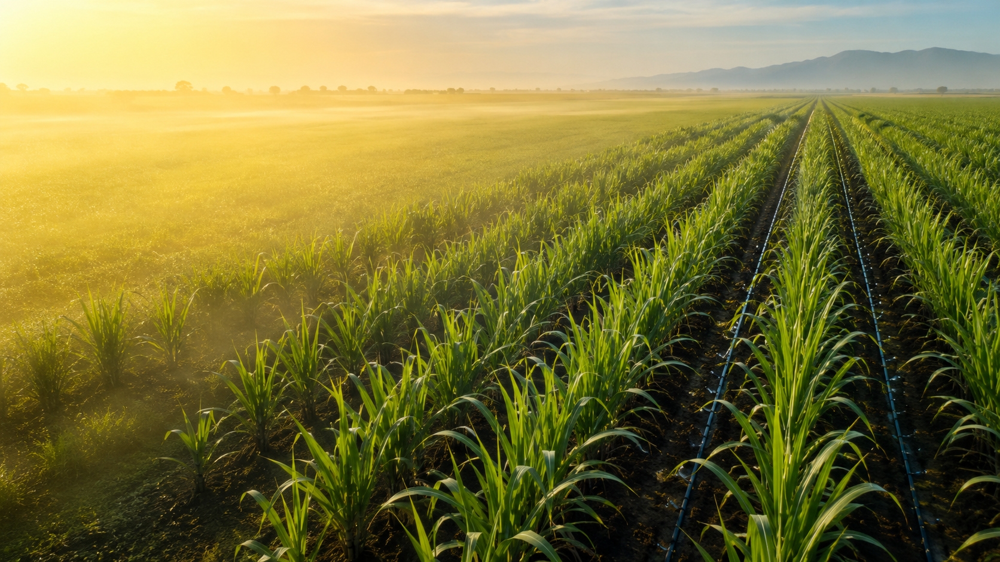

Drip irrigation is one of the most efficient methods of irrigating sugarcane crops. In this system, water is supplied directly to the root zone of the plants through a network of pipes, valves, filters, and emitters. This ensures that each plant receives the required amount of water without wastage. Drip irrigation helps conserve water by reducing evaporation, runoff, and deep percolation losses, making it especially useful in regions facing water scarcity. It also improves nutrient efficiency because fertilizers can be applied along with irrigation water through a process called fertigation. This method promotes healthy root development, faster plant growth, and higher sugarcane yields while minimizing weed growth and reducing the risk of fungal diseases caused by excessive moisture on leaves. Although the initial installation cost of a drip irrigation system is higher than traditional irrigation methods, its long-term benefits, such as water savings, reduced labor costs, improved crop quality, and increased productivity, make it a highly sustainable and cost-effective solution for modern sugarcane cultivation.